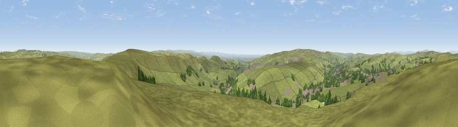

Viewpoint near Britannia
#10423 in England · top 14% of its area beats it · near BritanniaThe view, rendered

A 360° render of this exact spot computed from the terrain model, tree cover and land cover — summer colours, afternoon light, calibrated against photographs of famous viewpoints. Real trees, hedges and buildings will differ in detail.
The panorama
Grey silhouette: terrain skyline in each direction (720 bearings, Earth curvature and refraction included). Dashed green: skyline with trees (+15 m) and buildings (+8 m) as obstacles. Blue strip: how far the ground is visible on each bearing.
Where the view opens
Wedge length = distance to the farthest visible ground on that bearing (vegetation-aware). Rings at 10, 25 and 50 km.
What fills the view
88% grassland · 7% woodland · 5% built-up
Angular shares of the visible panorama (visual magnitude), not map area. Landscape diversity 0.20 (0–1 Shannon).
Key numbers
More beautiful places nearby
The staircase of upgrades: each row has a higher view potential than everything closer. Driving times are estimates from straight-line distance, calibrated against real road routing — check an actual route before setting out.
| Place | Direction | Drive | Score |
|---|---|---|---|
| Viewpoint near Shawforth | E · 2 km | ~4 min | 66.1 |
| Viewpoint near Whitworth | S · 4 km | ~9 min | 67.2 |
| Viewpoint near Edenfield | WSW · 8 km | ~16 min | 77.5 |
| Darwen Hill | W · 21 km | ~35 min | 80.7 |
| White Brow | WSW · 25 km | ~41 min | 82.9 |
| Warton Crag | NW · 64 km | ~87 min | 83.2 |
| Viewpoint near Grange-over-Sands | NW · 75 km | ~98 min | 83.4 |
| Viewpoint near Cartmel | NW · 78 km | ~102 min | 87.0 |
53.69590, -2.16618 · source: screening · position refined by local search. Computed location — check access rights before visiting.